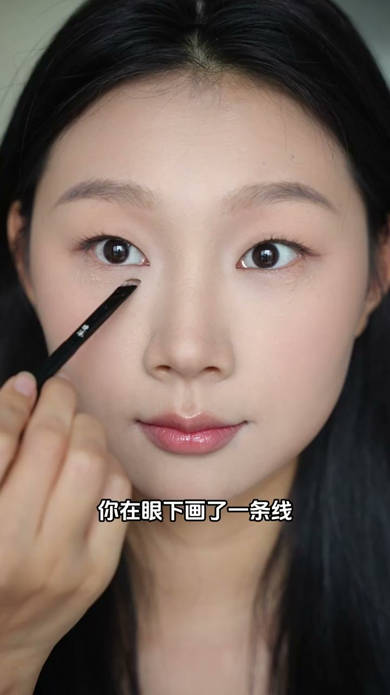
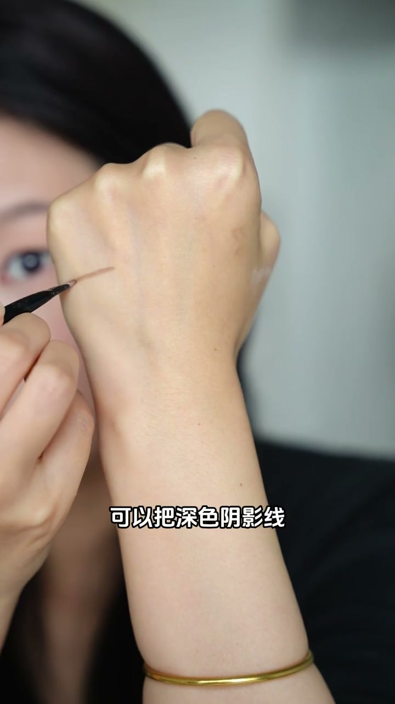
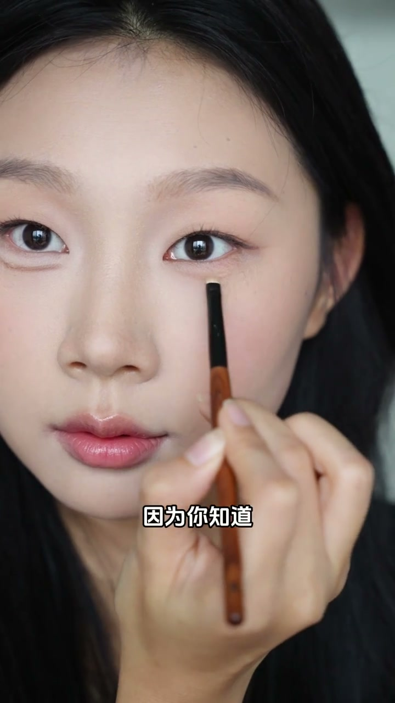
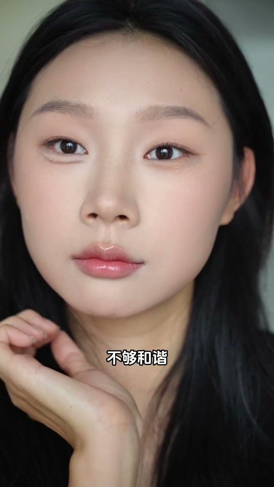
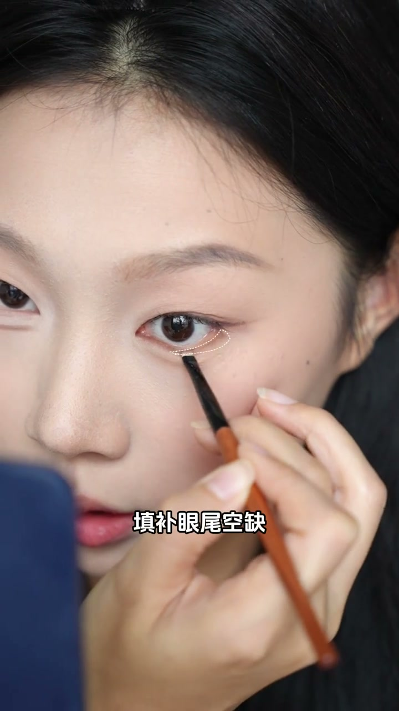
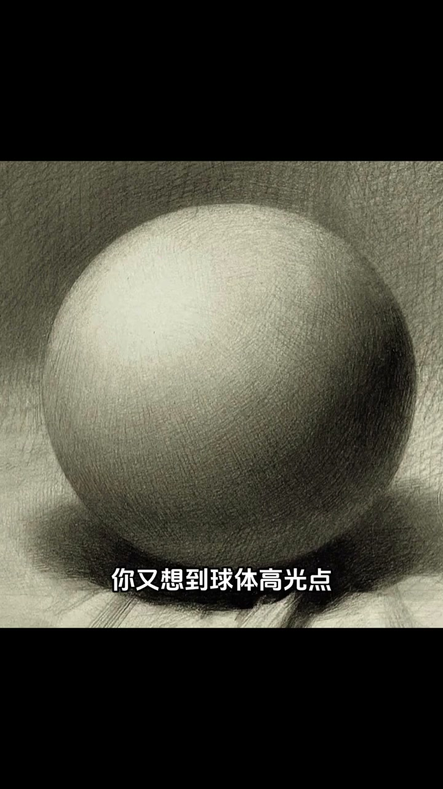
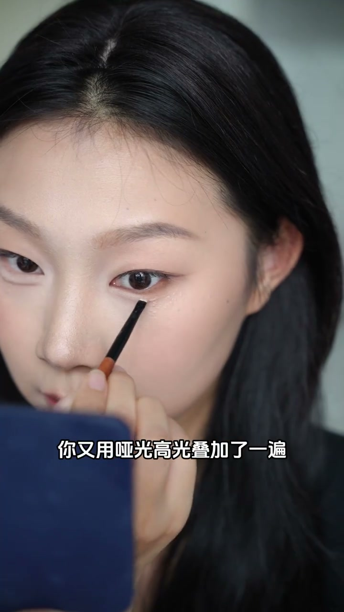

内容要点
[00:00] 你在眼下画了一条线
[00:01] 又在上方提亮
[00:02] 恭喜你掌握了花卧残的关键方法
[00:05] 经济囚禁的你不满足一次
[00:06] 觉得太僵硬不够自然
[00:08] 自然于思考的你
[00:08] 对个想法
[00:09] 可以把深色阴影线
[00:10] 换成浅色阴影面
[00:12] 于是你换了把有点厚度的小刷子
[00:14] 沾取棕色颜色
[00:15] 你现在眼睛只正向方向色
[00:17] 动手能力超强的你
[00:18] 先擦掉了余粉
[00:19] 彩座又运热开
[00:20] 因为你知道越靠外面
[00:21] 你的颜色要越淡
[00:22] 果然卧残线变得又柔和又利者
[00:25] 恭喜你
[00:25] 学会了让卧残从阴影线
[00:27] 进界到阴影面的惊贼
[00:29] 下雨观察的你马上又发现
[00:30] 卧残像是挂在脸上的
[00:31] 和眼中脱节不够和谐
[00:33] 突然你灵迹动
[00:34] 既然鼻影要左右
[00:35] 多加深还更立体
[00:36] 那卧残是不是也要
[00:38] 摄影下的加深呢
[00:39] 于是你又用眼影
[00:40] 加深卧残上方的节目
[00:41] 根捕和下肢三角区
[00:42] 填补眼尾空缺
[00:43] 当然也不能忘了
[00:44] 虚和边缘的容复技巧
[00:46] 果然换了下之后
[00:47] 卧残和整个眼睛都连接在了一起
[00:49] 更和谐了
[00:50] 恭喜你
[00:51] 领悟到了
[00:51] 卧残下之故分家
[00:52] 这个关键秘密
[00:53] 最还没完
[00:54] 追求极致的你觉得还不够空
[00:56] 你马上又想到的体量
[00:57] 出面的你当然不会
[00:58] 整理挑剔卧残
[00:59] 没有层次还显得僵硬
[01:01] 你又想到球体
[01:02] 高光点都是小面积扣上了
[01:03] 于是三余群一反三的你
[01:05] 也在卧残的前端上方
[01:06] 小范围体量
[01:07] 到中间自然过度消失
[01:09] 果然和你想的一样
[01:10] 卧残瞬间变得非常一体了
[01:11] 你又用雅光高光叠加了一遍
[01:13] 村民的你发现
[01:14] 高佳粉结合就非常牢固
[01:16] 更时装了
[01:17] 恭喜你
[01:17] 这样超简单就能画出
[01:19] 妈生赶卧残的技巧
[01:20] 就被你给发现了
[01:21] 我就说你是个天才吧
[01:23] 他也有什么是你做不到的






